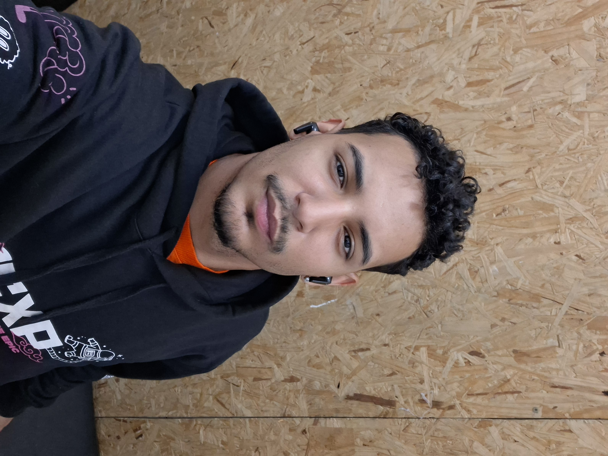

Conheça a Hyperpage e entenda como ajudamos pequenos negócios a crescerem no mercado digital.
Democratizar o acesso a sites profissionais e estratégicos, permitindo que pequenos negócios e profissionais conquistem seu espaço no digital sem gastar uma fortuna.
Ser a agência de referência para pequenos negócios que buscam transformar sua presença digital em oportunidades reais de crescimento e faturamento.
Transparência, qualidade, resultado e relacionamento próximo. Você não é um número para nós, é um parceiro no seu crescimento.
A Hyperpage nasceu com um objetivo claro: tirar a presença digital do papel. Sabemos que não basta ter um site bonito — é preciso que ele trabalhe para você. Por isso, nossos projetos são estratégicos, focados em converter visitantes em clientes.
Cada site que desenvolvemos é uma solução pensada para o seu negócio específico, não uma cópia genérica. Responsividade, velocidade, SEO e design que passam credibilidade são a base do nosso trabalho.

Patrick é desenvolvedor frontend especializado em criar soluções web modernas e estratégicas. Estudante de Engenharia de Software, vem construindo experiência prática no mercado tech, com foco em aplicar conhecimento teórico em projetos reais que geram resultados.
Sua jornada é marcada por evolução constante, aprendizado acelerado e aplicação prática imediata. Cada projeto é uma oportunidade de refinar técnicas, entender melhor o mercado digital e contribuir efetivamente para o crescimento dos clientes.
Cabeleireiros, consultórios, restaurantes, lojas locais. Empreendedores que querem colocar seu negócio na internet de forma profissional.
Consultores, coaches, fotógrafos, designers. Quem oferece serviço precisa de um portfólio que impressione e converta.
Negócios em fase inicial que precisam de presença digital rápida e estratégica para atrair clientes e investidores.
Se seu objetivo é ganhar espaço no digital, atrair clientes e gerar oportunidades reais, você está no lugar certo.
Se você é um pequeno negócio ou profissional que quer conquistar seu espaço no digital, vamos conversar.
Solicitar Orçamento